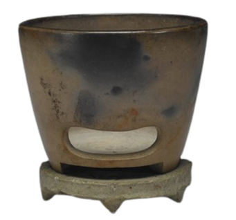
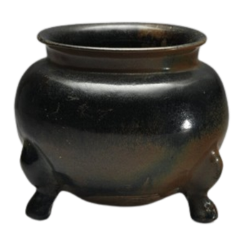
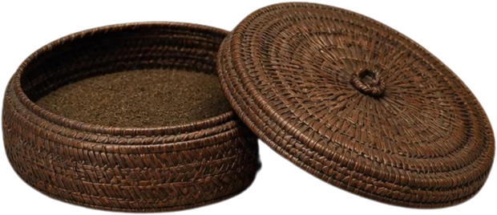
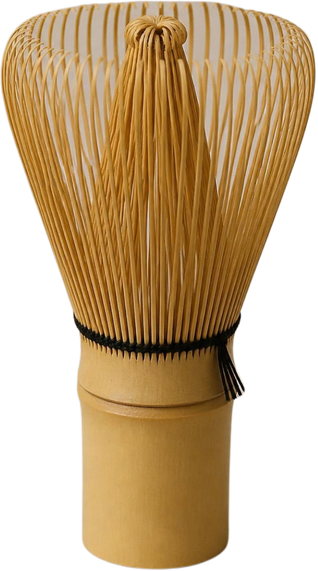
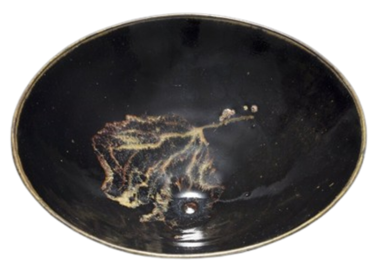
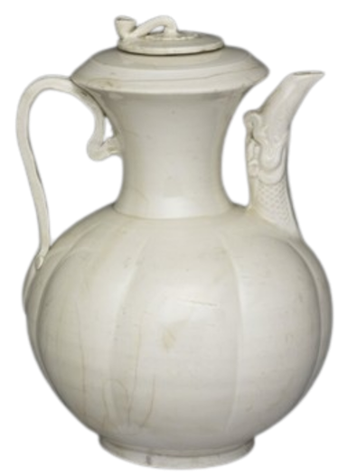

唐代
唐代茶文化背景
對於唐代社會而言，經濟與文化都十分繁榮繁榮形容詞發展得很好，經濟、文化等都很興盛。，飲茶習慣也從南方逐漸擴散擴散動詞從一個地方或範圍慢慢傳到其他地方。到全國各地。 陸羽所寫的《茶經》以整理茶事為核心核心名詞最重要、最主要的部分。，內容涵蓋茶樹種植、採摘、製作與煮茶方法， 體現體現動詞把某種特點、價值或想法表現出來。了他對茶文化的全面觀察，因此陸羽被尊稱為「茶聖」。
這個時期，飲茶不再只是解渴的日常需求，而是逐漸納入納入動詞把某人或某事物放進一個範圍或系統裡。文人、僧侶的生活，社會上也開始出現專門飲茶的茶館。
唐代飲茶哲學
對唐代文人而言，飲茶不只是享受，也是一種實踐實踐名詞把某種思想或理念付諸行動、實際去做。。 儒家提倡以節制、簡樸為核心核心名詞最重要、最主要的部分。，透過喝茶培養好品格。
道家重視順應自然，在泡茶時觀察水、火與茶的變化，體悟體悟動詞通過親身體驗而明白、理解。自然的秩序秩序名詞事物按一定規則、關係排列而形成的次序。，藉以擺脫擺脫動詞從困難、束縛或影響中脫離出來。世俗牽絆。
佛教則認為喝茶能保持清醒、專注，讓心安靜下來，體會禪的境界境界名詞事物達到的高級精神或情境狀態。。 三家雖然不同，但都把茶當成修心的媒介媒介名詞用來傳達、聯繫或促成某種事物的工具或方式。。 就像現代人提倡專心感受當下的概念一樣。
唐代煎茶器具

風爐
鍑（釜）
羅合來煮一鍑唐茶
煎茶小結
唐代煎茶講究每一沸的時機：一沸加鹽，二沸投茶，三沸止沸。從炙茶到分茶，體現了唐人飲茶的文化修養。
宋代
宋代茶文化背景
對於宋代文人而言，飲茶比唐代更講究「美感美感名詞對美好事物的感受，或是對美的鑑賞能力。」與「精緻精緻形容詞精巧細緻，製作或呈現得非常講究、用心。」。
之所以會有這種變化，是因為宋代的經濟更加繁榮、城市生活也比較發達，一般市民也能接觸飲茶這種休閒活動；加上印刷術普及，茶書、茶詩得以廣泛流傳流傳動詞事物、消息或作品等一直傳下去，傳到後世或各地。，飲茶知識更容易累積，因此宋代茶文化格外精緻，體現體現動詞把某種特點、價值或想法表現出來。出宋人涵養內心、講究細節的態度。
宋代四藝與格物致知
對於宋代的文人而言，飲茶不只是解渴，而是一種生活美學的追求。點茶者透過精細地調控調控動詞調整並控制，使之達到適當的狀態。水溫與攪打攪打動詞用工具快速攪動、拍打，使材料充分混合或起泡。力道，觀察茶湯泡沫泡沫名詞液體中聚集的許多小氣泡。的變化，使點茶不再是單純的享樂，而是一種精神生活的體現體現動詞把某種特點、價值或想法表現出來。。
文人更將點茶與插花插花動詞把花朵剪裁後依照美感原則加以安排、擺設的技藝。、焚香焚香動詞點燃香料，讓香氣散發，用以靜心或營造氣氛。、掛畫掛畫動詞將書畫作品懸掛展示，用以布置空間、陶冶性情。並列為生活四藝，體現了宋代時文人對於飲茶的雅致追求。
宋代點茶器具

茶筅
茶盞
湯瓶來點一碗宋茶
點茶小結
點茶的每一步都在控制茶湯的狀態：溫碗讓茶保持溫度，調膏讓茶粉均勻，分次注水攪打才能打出綿密的泡沫。
複習
複習唐宋茶文化
完成三個關卡，複習唐宋茶文化的生詞、語法和文化內容。
第一關生詞
選出最適合的詞，完成句子。
第二關語法
用課堂上學過的句式完成題目。
第三關文化｜唐、宋還是兩者？
這些做法屬於唐代、宋代，還是兩個時代都有？
唐宋比較卡
唐代
順應自然、觀照內心，重視個人自省與天人秩序。
宋代
講究精緻的生活美學，點茶成為文人的社交實踐。
請用「不是…而是…」或「之所以…是因為…」寫一句話，比較唐代和宋代的茶文化。
參考答案 1：宋代飲茶之所以更講究美感，是因為經濟繁榮、城市生活發達。
參考答案 2：宋代點茶不是把茶粉放進鍋中煮，而是直接在茶碗中沖泡。